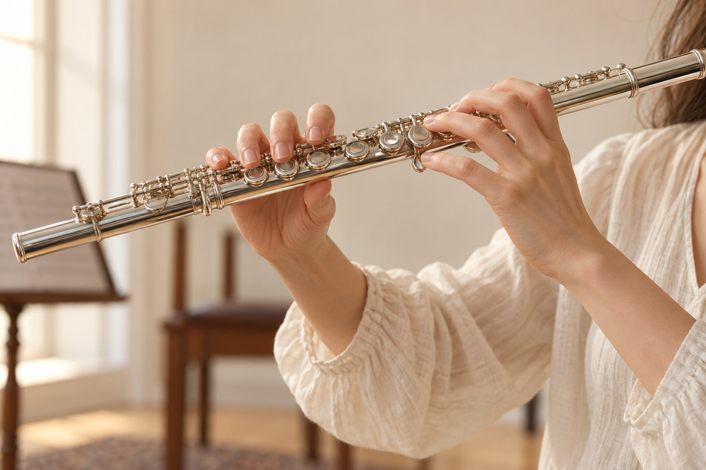

Musica. Ascolto. Incontro.
La musica,
uno spazio
di incontro.
Musicoterapia, progetti musicali e lezioni di flauto: tre modi di incontrare la musica e trovare il proprio spazio di espressione.

Fotografia illustrativa, da sostituire con uno scatto di Yasmin.
Tre modi di vivere la musica
Il tuo punto di partenza.
Per chi desidera un percorso personale, per chi vuole imparare e per chi cerca una collaborazione artistica.

Ogni persona ha
il proprio tempo.
Chi sono
Yasmin Khreiwesh
Musicoterapista, flautista e insegnante di flauto. Questo sito riunisce le tre dimensioni del mio lavoro: la relazione attraverso la musica, l’esperienza artistica e l’insegnamento.
Qui inseriremo la biografia di Yasmin, la formazione e le esperienze, usando il curriculum che ci fornirà.
Formazione e curriculum →Da esplorare, anche a distanza
Musica e respiro.
Uno spazio dedicato ai futuri corsi online, con programmi, modalità e materiali.
Esplora i corsi →